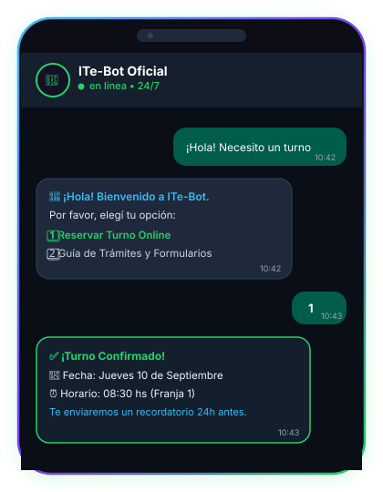

Atención Continua 24/7
Tus clientes o ciudadanos reciben respuestas automáticas e inmediatas a cualquier hora del día sin colas ni demoras.
Respuestas instantáneas 24/7, asignación interactiva de cupos y derivación a operador en WhatsApp, respaldado por un motor nativo en Go 100% On-Premise.

Resolvé consultas, asigná citas y entregá formularios directamente en la aplicación que todos tus usuarios ya conocen y usan: WhatsApp.
Tus clientes o ciudadanos reciben respuestas automáticas e inmediatas a cualquier hora del día sin colas ni demoras.
Selección de fechas y franjas horarias con cupos en tiempo real, confirmación instantánea y recordatorios automáticos.
Envío directo de documentos PDF oficiales, requisitos y guías de trámites sin descargas de aplicaciones externas.
Si una consulta requiere atención personalizada, el bot se pausa automáticamente y transfiere el chat a un agente.
Sin plataformas externas de suscripción ni filtración de datos a terceros. Un binario Go autónomo con control total sobre tu hardware.
Compilado estático en Go sin dependencias pesadas de Node.js o Python. Utiliza menos de 15MB de memoria RAM en producción y opera fluido en servidores modestos o Raspberry Pi.
Persistencia relacional con modo WAL local. Las conversaciones, historiales de turnos y bases de datos residen exclusivamente en tus instalaciones físicas, cumpliendo normativas de privacidad.
Mecanismo avanzado de delays variables con ritmo humano, micro-pausas de lectura, motor de Spintax, horarios de descanso configurables y calentamiento progresivo de líneas.
Construcción de árboles de decisión y flujos conversacionales mediante nodos arrastrables, emulador sandbox de pruebas y telemetría en tiempo real mediante WebSockets.
Puesta en marcha ágil sin configuraciones enredadas ni contratos atados a la nube.
Escaneá el código QR desde WhatsApp para conectar la línea telefónica institucional de forma segura.
Personalizá tus mensajes de bienvenida, opciones de turnos y preguntas frecuentes desde el editor visual.
El bot atiende a cientos de usuarios en simultáneo con notificaciones en tiempo real al panel administrativo.